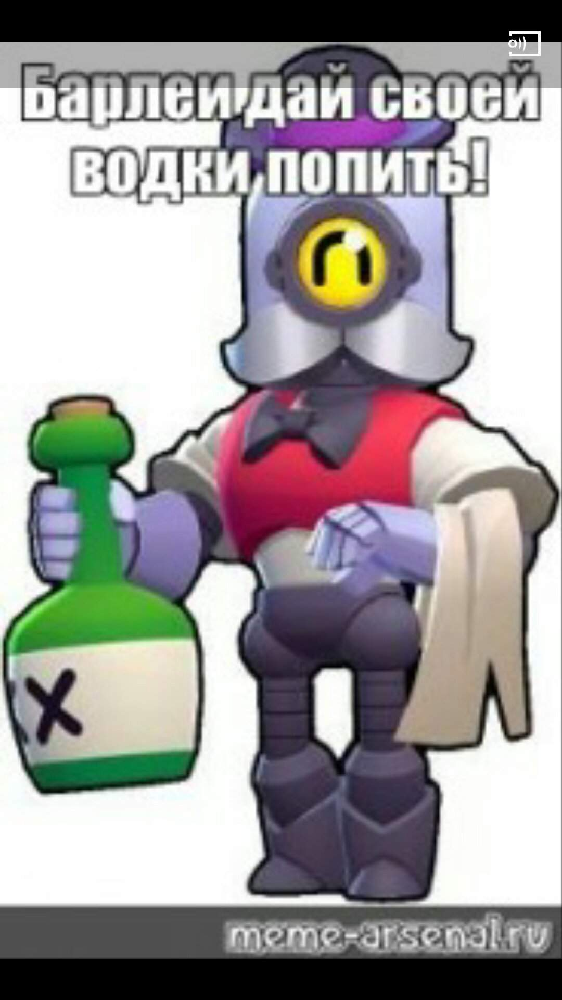

шлли
дается в самом начале игры Brawl Stars. Среднее количество здоровья, а урон зависит от того, сколько пуль достигло врага. Понятно, что дробовик наносит больше дамага на ближней дистанции, так что играть ей лучше на ближней дистанции. Её Супер более мощный, чем стандартная пальба, он пробивает стены и способен оттолкнуть противника или прервать Супер Кольта и Фрэнка.дается в самом начале игры Brawl Stars. Среднее количество здоровья, а уро
нита
выпадает в качестве награды за 10 трофеев на «Пути к славе». Имеет среднее количество здоровья и наносит невысокий урон. Атака пробивает врагов и ящики насквозь. Ее способности в полной мере раскрываются лишь на 10 уровне с пассивками. Супер призывает медведя с большим запасом здоровья, но невысоким уроном, который сражается вместе с ней. Иногда медведь сильно облегчает игру команды — ведь в ней периодически появляется еще один «игрок». Медведь чувствует спрятавшихся в кустах противников и идет прямо к ним. А это хороший плюс к игре за Ниту.н зависит от того, сколько пуль достигло врага. Понятно, что дробовик наносит больше дамага на ближней дистанции, так что играть ей лучше на ближней дистанции. Её Супер более мощный, чем стандартная пальба, он пробивает стены и способен оттолкнуть противника или прервать Супер Кольта и Фрэнка.
кольт
дается в самом начале игры по достижению 60 трофеев на «Пути к славе». У него небольшой запас здоровья, но относительно высокий урон.
булл
открывается на «Пути к славе» по достижению 250 трофеев. У него такой же тип атаки, как и у Шелли и Дэррила, но с более короткой дальностью. Булл обладает большим количеством здоровья (но меньше обычной нормы для тяжеловеса) и высоким уроном на ближней дистанции. Его Суператака позволяет сделать длинный рывок вперед, наносящий урон врагам и разрушающий препятствия на пути. Он хорош тем, что к нему в начале игры никто не лезет. Так что можно не бояться слиться в первые секунды боя.
джейси
открывается на «Пути к славе» по достижению 250 трофеев. У него такой же тип атаки, как и у Шелли и Дэррила, но с более короткой дальностью. Булл обладает большим количеством здоровья (но меньше обычной нормы для тяжеловеса) и высоким уроном на ближней дистанции. Его Суператака позволяет сделать длинный рывок вперед, наносящий урон врагам и разрушающий препятствия на пути. Он хорош тем, что к нему в начале игры никто не лезет. Так что можно не бояться слиться в первые секунды боя.
брок
дают после достижения 1000 трофеев на «Пути к славе». Его ракетница с дальнобойными ракетами наносит серьезный урон в небольшой области, но перезаряжается довольно медленно. Как и другие стрелки, Брок обладает слабым запасом здоровья, так что не следует идти с ним в рукопашную. Суператака запускает поочередно 9 ракет, которые наносят неплохой урон врагу, идущему толпой.
диномайк

Получить бойца можно на «Пути к славе» за 2000 трофеев. Имеет малое количество здоровья, но наносит очень высокий урон. Его Супер может мгновенно уничтожить таких персонажей, как Тик, Барли, Динамайк, Брок, Кольт, Беа, Пайпер, Ворон или Спайк. Хорошо им играть на картах с большим количеством сундуков, стоящих рядом. Он быстро их разбивает, что дает возможность собрать кубики усиления.
бо
можно получить после достижения 3000 трофеев на «Пути к славе». Персонаж имеет средний показатель здоровья и ощутимый урон на средней дистанции. Его Суператака устанавливает невидимые для вражеских бойцов мины, которые взрываются при их приближении. Хорошо использовать эту способность в «Захвате кристаллов», забрасывая их в центр карты. Опасный противник, но я им играю мало.
тик
достается, когда Вы получаете 4000 трофеев. У него крайне малый запас здоровья, но самый большой урон и самая высокая дальность среди всех бойцов класса «Метатель» (в этом классе Динамайк и Барли). Он стреляет руками-пушками, которые выпускают три мины. В отличии от мин Бо, его снаряды видны противнику. Во время Супера он бросает в противника свою голову, которая прыгает за врагом, а, взрываясь, наносит высокий урон. Ее, однако, можно уничтожить издали.
8-бит
открывается на «Пути к славе» за достижение 6000 трофеев. Он обладает средним количеством здоровья и высоким уроном. В атаке использует лазерный пистолет. Минусом является то, что он самый медленный персонаж в игре. Супер позволяет поставить базу, усиливающую урон ему и союзникам, находящимся на ней. Довольно неприятный противник на картах с открытой местностью и узкими коридорами. Хорош в битве с роботами.
эмз
получить не так просто — нужно собрать аж 8000 трофеев на «Пути к славе». У нее средний уровень здоровья и невысокий урон вблизи, который, впрочем, увеличивается в три раза (с 500 до 1500), если противник находится на удалении, где атака наиболее сильна. Персонаж хорош в боях на средней дистанции. Супер Эмз называется Жгучая Харизма. Она замедляет противника и наносит по 200 очков урона в секунду. При игре вплотную Эмз вчистую проигрывает почти всем персонажам игры и это ее основной минус.
барли
можно выбить с любого ящика. Имеет низкий уровень здоровья, но обладает уникальным типом атаки, бросая бутылки с кислотой. Химикат покрывает землю ядом и наносит урон врагам, что стоят на ней. Подобной атакой обладают другие персонажи Brawl Stars: Тик и Динамайк. Суператака носит название «Последний заказ». Барли выбрасывает 5 бутылок пылающей жидкости, которая разливается на огромной площади и наносит урон стоящим там врагам.
роза
наносит врагу трехкратный удар своими боксёрскими перчатками. Уровень здоровья у нее высокий, дальность атаки средняя. Супер активирует растительный щит вокруг нее, позволяющий отразить 70% урона на 3 секунды.
поко
редкий персонаж Браво Старс. Его преимущество — очень широкий радиус атаки. Но сама атака довольно слабая, а количество очков урона не позволяет ему выживать в затяжном бою. Поко хорош в качестве поддержки: его суперспособность позволяет быстро восстанавливать здоровье себе и товарищам по команде. Берите Поко, если Вам нужно выполнить квест, связанный с восстановлением здоровья.
эль примо
это боец ближнего боя. Имеет высокий показатель здоровья, что позволяет ему легко переносить большинство вражеских атак. Сражается голыми кулаками, нанося по 4 удара за раз. Его Суператака — это прыжок на врага с дальнего расстояния, который наносит им урон, отбрасывает назад и разрушает препятствия. Хорош в «Броуболе».
дррил
это сверхредкий персонаж Brawl Stars, которого можно получить из любого ящика. Имеет большой запас здоровья. Атакует при помощи двух дробовиков. Очень опасен в ближнем бою. Суперспособность дает возможность свернуться в бочку и быстро помчаться в выбранном направлении. Данное умение перезаряжается за 30 секунд.
карл
имеет много здоровья и наносит хороший урон. В качестве атаки он бросает свою кирку, которая летит подобно бумерангу, нанося урон любому врагу, оказавшемуся на пути. Суперспособность Карла называется «Волчок», так как он быстро крутится, словно юла, нанося большой урон в ближнем радиусе.
рико
можно получить из любого ящика. Имеет низкий уровень здоровья и средний урон. Его снаряды отскакивают от стен, что можно использовать для атаки укрывшихся за стенами противников. Супер у Рико – длинная очередь из пуль, напоминающая Супер Кольта, но в отличии от последнего, пули Рико не разрушают стены. Я не очень люблю играть за Рикошета.
пенни
это сверхредкий персонаж, которого можно выбить из любого ящика. У нее среднее здоровье и атакует она, выстреливая мешочки с золотом, которые наносят больший урон, когда цели выстроены в ряд. Очень эффективна против бегущих гуськом или стадом противников в «Броуболе», «Захвате кристаллов» и других командных играх. Её Суператака позволяет установить пушку, которая наносит большой урон, но довольно медлительна.
джеки
это бравлер из мартовского обновления игры (от 17 марта 2020 года). Она вооружена отбойным молотком, который наносит урон врагам, находящимся поблизости. У нее 3 заряда. Своим Супером Джеки притягивает близлежащих бойцов и наносит им урон, так что данная способность напоминает супер Тары. Удобно то, что при игре за данного бравлера не надо прицеливаться — она наносит дамаг вокруг себя по кругу, довольно быстро передвигаясь по игровому полю.
беа
эпический персонаж Бравл Старс с низким запасом здоровья в игре, который компенсируется довольно высоким уроном. Её основная атака невелика, но после первого попадания Беа заряжает пчелу, которая может ваншотить нерасторопных игроков. Во время использования Супера Би стреляет 7 пчёлами в разные стороны, каждая из которых наносит небольшой дамаг и замедляет противника на 3 секунды. Один из моих любимых персонажей в Бравл Старс. На фото Вы видите ее скин «Божья коровка
биби
может выпасть из любого ящика. Имеет средний показатель здоровья и высокий урон. Обладает самой большой задержкой (даже больше чем у Фрэнка) перед атакой. Особенность основной атаки этого персонажа — шкала хоум-ран. Если шкала заполнена, то нанесенный удар отбросит противника на некоторое расстояние. Суператака — это пузырь от жвачки, который обладает большой дальностью и проходит сквозь противника, отскакивая от стен. Исчезает через 5 секунд. Играть за Би би в Бравл Старс довольно интересно, особенно при наличии звездных сил.
пайпер
это эпический персонаж Бравл Старс, которого можно выбить из любого ящика. Как дальник меет низкий уровень здоровья, но её основная атака наносит тем больший урон, чем дальше находится противник. Благодаря своему Суперу Пайпер взмывает в воздух, раскрыв зонтик-винтовку, напоминая Мери Поппинс, сбрасывая при этом четыре гранаты, разрушающие стены и наносящие большой урон оставшимся на земле врагам. Играть за Пайпер в Бравл Старс интересно, но требуется обладать хорошим скиллом.
пэм
отличная поддержка в командной игре Бравл Старс. Во время базовой атаки она стреляет со средним радиусом и дальностью, используя металлические болты. Обладает хорошим запасом здоровья и средней скоростью передвижения. Используя Супер, толстушка Пэм устанавливает лечебную турель. Недостаток основной атаки Пэм в том, что снаряды летят с большим разбросом.
фрэнк
также относится к эпическим персонажам Браво Старс и выбить его можно из любого ящика. Атакой он может поразить нескольких врагов. У него очень хороший запас здоровья, поэтому убить его не так просто. Удар молотом по земле провоцирует большую ударную волну и способен ломать стены, а также поражать неограниченное количество бойцов в радиусе действия, оглушая их на несколько секунд. Радиус Супера превышает область обычной атаки. Фрэнка можно использовать в Бравл Старс в «Броуболе», чтобы ломать препятствия на пути к воротам противника.
нани
боец класса «воин». Выбить его можно из любого ящика. Отличается нормальной скоростью, низким запасом здоровья и хорошим уроном. Атакует тремя световыми сферами, которые двигаются по ромбовидной траектории. У Нани есть дрон Пип, которого она выпускает при использовании Супера. При этом сам персонаж теряет способность двигаться, пока Пип летает по арене, управляемый игроком. Столкнувшись с препятствием или врагом, дрон взрывается.
эдгар
появился в декабре 2020 года и является 43 персонажем в игре Brawl Stars. Здоровья со старта 3000 хп, перезарядка 6 десятых секунды, атакует шарфиками и одновременно исцеляет себя, что-то наподобие вампиризма. Может перепрыгивать препятствия и получает при этом ускорение. На мой взгляд, Эдгар — один из самых сильных игроков в Бравл Старс, за которого интересно играть.
джин

это мифический герой Бравл Старс, которого можно выбить из ящика. Имеет среднее количество здоровья и средний урон. Его Супер притягивает противника к себе, разрушая стоящие на пути стены. Основная атака хороша для того, чтобы чекать кусты, так как выстрел впоследствии разделяется на несколько пучков, расходящихся веером и летящих на далекое расстояние.
макс

обладает высокой скоростью и может стрелять сразу из четырёх обойм, которые перезаряжаются довольно быстро. В каждой обойме по 4 пули, наносящие небольшой урон. Запас очков здоровья невелик. Её Супер позволяет на 4 секунды ускорить себя и своих друзей поблизости.
мистер п
это 33-й персонаж, появившийся в феврале 2020 года. Его можно выбить из любого ящика. Отличается маленьким уроном и средним запасом здоровья. Во время атаки бросает чемодан, который наносит двойной урон, если противник стоит на месте. Его Супер создает базу, на которой спаунятся пингвины-носильщики. Они атакуют врага одиночными выстрелами на короткой дистанции.
мортис
-мифический герой Brawl Stars. Его атака отличается от действий других персонажей тем, что во время нападения он делает рывок вперёд на небольшую дистанцию. Что при должном умении дезориентирует противников. Однако перезарядка очень медленная. Используя свой Супер, Мортис бросает на противника рой летучих мышей-вампиров, которые восстанавливают Мортису здоровье, нанося противнику урон. На 10 уровне силы он очень опасен в умелых
тара
может выпасть из любого ящика. Она имеет среднее количество здоровья. При атаке Тара бросает во врага карты таро, пронзающие и наносящие средний урон. Используя Супер, Тара создает гравитационный колодец, который стягивает к себе врагов и взрывается, нанося 1080 очков урона.
спраут
мифический герой Бравл Старс, появившийсяся в игре в апреле 2020 года. Относится к классу метателей, обладает самым большим запасом здоровья в этой категории бравлеров. Единственный персонаж, который супером может создавать препятствия на поле в виде колючих кустов. Довольно интересный персонаж, который требует хороших игровых навыков. У него есть интересный скин «Лунный Спраут».
байрон
появился в декабре 2020 года. Ядовитый во всех отношениях тип! Его основная атака отравляет ядом, как атака Ворона. При использовании Супера персонаж бросает микстуру, которая либо отравляет врага, либо лечит союзника. В этом его отличие от гаджета Барли.
ворон

может выпасть из любого ящика. очень неприятный противник — маленький, шустрый и опасный! У него средний радиус атаки и очень мало здоровья, что компенсируется высокой скоростью перезарядки. Атакованные противники не могут исцеляться, так как кинжалы Ворона отравлены. Супер выглядит как мощный прыжок, а после приземления персонаж разбрасывает вокруг себя отравленные кинжалы. Яд постепенно отравляет противника, отнимая очки здоровья и снижая наносимый урон.
леон

легендарный боец Brawl Stars, которого можно выбить из любого ящика. Он имеет средний урон в ближнем бою и хорошее здоровье для схватки. Во время атаки Леон бросает 4 сюрикена, которые наносят тем меньше урона, чем бальше находится цель. При активации Супера Леон на 6 секунд становится невидимым, и противники замечают его только на расстоянии в 4 клетки. Невидимым он остается и для медведя Ниты, турели Джесси, пушки Пенни, тени Тары и головы Тика.
сэнди

ще один легендарный персонаж-соня с умеренным здоровьем и средним уроном. Атакует по прямой, швыряясь алмазным песком в соперников. Так как радиус поражения достаточно большой (6 клеток), то увернуться сложно. Перезаряжается довольно медленно. Страдает хроническим недосыпом и спит на ходу. Его Супер позволяет вызвать песчаную бурю и скрыть союзников и себя на 9 секунд.
спайк
это легендарный персонаж Бравл Старс, обладающий низким уровнем здоровья, но наносящий огромный урон вблизи. Его кактусовая граната взрывается при ударе о препятствие и разлетается острыми шипами во всех направлениях, нанося урон противнику. Супер выглядит как бросок гранаты, на месте падения которой образуется колючая область, замедляющая врага и наносящая ему по 500 очков дамага в секунду.
амбер
девушка и первый легендарный персонаж женского пола, который появился в игре 23 октября 2020 года. Её урон в секунду — 2000. Здоровья на первом уровне 3000, радиус атаки 7,3, атака называется «дыхание дракона», Супер позволяет бросить нечто наподобие нефтяной жидкости во врага, которая загорается во время основной атаки, нанося 1800 очков урона врагам в области разлива. Впрочем, сгорает это масло довольно быстро.
гэйл
это хроматический персонаж, который работает уборщиком в отеле Мистера Пи. Это возрастной персонаж, дедушка, стреляющий снежками. Атака наносит 6х378 урона, персонаж выстреливает 5 пуль-снежков за атаку, покрывая широкую площадь, что практически лишает противника возможности увернуться на открытой местности. Супер «штормовой ветер» отбрасывает врагов далеко назад с одновременным небольшим уроном.
вольт
хроматический боец класса «Воин», которого можно выбить из любого ящика или получить с 30 уровня 2 сезона Brawl Pass. Вольт уникален тем, что прокачивается в процессе боя, используя Супер. После 3х кратного попадания по врагу он делает апгрейд и получает бонус в виде скорости, дальности атаки и количества осколков от заряда, разлетающихся после удара о препятствие. Вопрос один: почему он такой медленный в начале боя?
колетт
появилась в сентябрьском обновлении игры 2020 года). Со старта персонаж получает 3400 очков здоровья, перезарядка занимает 1,8 секунды, базовый урон от начинается от 500 (или 37% от запаса здоровья врага). Супер — это рывок вперед на большое расстояние с последующим возвратом на исходную точку. При этом урон также составляет 20% от запаса здоровья врага, но не может быть менее 500. По особым целям наносится двойной урон. Я так понимаю, это всевозможные турели, ульи, пушки и т.д.
лу
появился в ноябрьском обновлении игры. Отличается высокой дальностью атаки, средней скоростью передвижения и быстрой перезарядкой. Атакует персонаж снежками, заряжая Супер, который создает скользкий каток на поле боя. Гаджет дает возможность избежать урона, а звездная сила замораживает скорость перезарядки или оглушает врага.